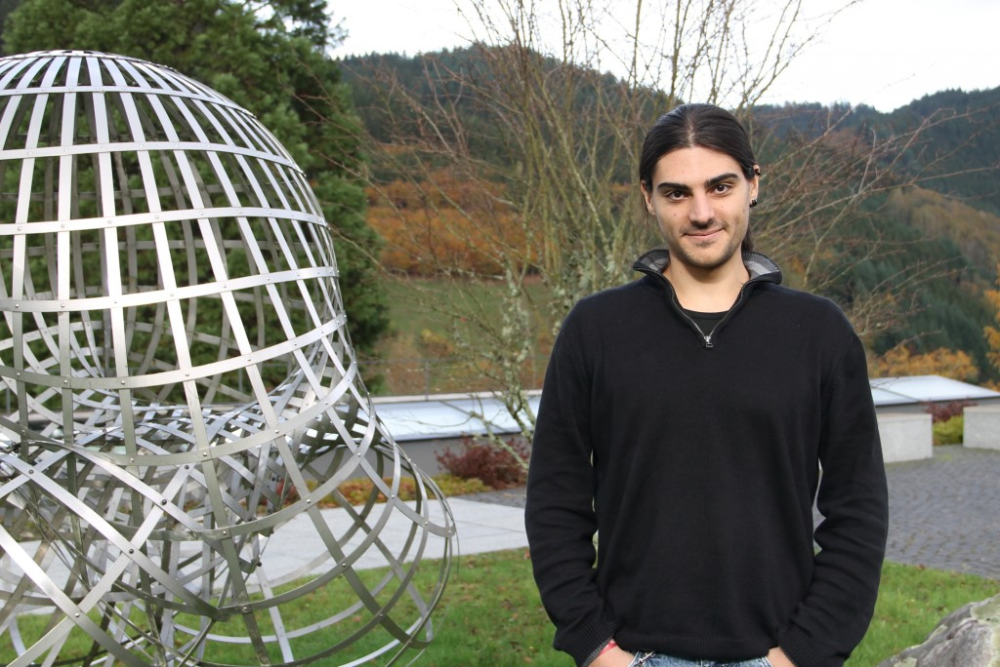

About me
I am currently Chargé de recherche (researcher) CNRS at the University of Nantes (France). Pior to my current position, during the years 2020 to 2022, I was a postdoctoral researcher in the working group of Chris Wendl at Humboldt University in Berlin (Germany), and, during the years 2018 to 2020, a postdoctoral researcher in the research group of András Stipsicz at the Alfréd Rényi Institute of Mathematics of Budapest (Hungary). During my PhD, from 2015 to 2018, I worked at the Centre de Mathématiques Laurent Schwartz of École polytechnique in Palaiseau (France), under the supervision of Patrick Massot.
Research interests
I have very broad interests in the the fields of symplectic and contact topology, with a particular focus on topological techniques to study the interaction between flexible and rigid behaviours in such fields. For more information, please visit my research page.
How to contact me
Address:
Laboratoire de Mathématiques Jean Leray,
2 Chem. de la Houssinière,
44322 Nantes
France
Email:
,